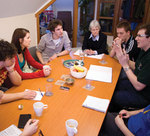
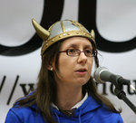
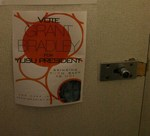
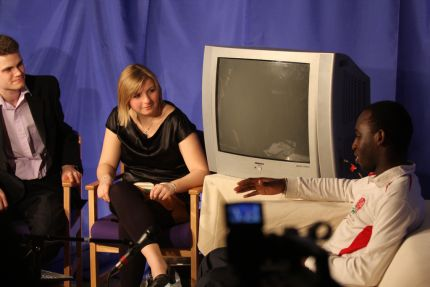

YUSU Elections 2009
Tim Ngwena wins 2009/10 YUSU Presidency – How it happened
Live coverage of YUSU Elections 2009 from Nouse
Exit Polls predict narrow win for Langrish in race for President
Exit polls have predicted a slim 4 point victory for Tom Langrish over presidential rival Tim Ngwena.
YUSU: Just another popularity contest?
Our cross-campus panel of experts discuss matters of student politics, elections, and how YUSU needs to improve.
Poll shows lead for Ngwena in Presidential race with large proportion still undecided
Tim Ngwena leads the race for YUSU President according to a Nouse poll conducted last week.
‘Viking Kath’ drops out of race for Sports President
Kath Mildon has withdrawn from the YUSU elections for York Sport President and NUS Conference Delegate, citing incompatibility with existing work commitments.
Campaigning begins in earnest
With hustings over, and voting week looming, candidates for the upcoming YUSU Elections have moved quickly to secure the attention, and support of students.
Bushby penalised after election rules broken
Presidential candidate Charles Bushby and his campaigners will be unable to campaign between 12pm and 5pm on Friday after a mass message endorsing the candidate was sent this morning.
Presidential candidate breaches election rules minutes before hustings
Presidential candidate Grant Bradley has breached election rules, discovered only minutes before he is due to speak at hustings.
 RAG pair drop out as hustings continues
RAG pair drop out as hustings continues
Sarah Goss and Will Scobie have withdrawn their candidacy for the position of RAG Officers today.
Live Hustings – Wednesday
Nicky Woolf and Sian Turner are back bringing you the latest news from the second day of Hustings, with speechs and questions from Women’s Officer, LGBT Officer, Disability Officer, Student Action, RAG, Academic Affairs, Welfare and President.
Presidential candidates discuss arms divestment campaign
As election campaigning continues Presidential candidates voice their opinions on the current campaign to lobby the University to divest from the arms trade.
 Alternative methods adopted as campaigning begins
Alternative methods adopted as campaigning begins
With videos, blogs and personal websites, the first five hours of official election campaigning have seen a wide range of new technologies utilised by candidates in their bid to win YUSU positions for the coming year.
“Rip-off” poster added to Facebook group as campaigning continues
Controversy has arisen amongst candidates after Democracy and Services candidate David Sharp posted a campaign poster on his Facebook page which is identical to those distributed by candidate Lewis Bretts.
Live Hustings – Tuesday
Nouse‘s Sian Turner and Nicky Woolf take you though hustings for NUS Annual Conference Delegates, Chair of Union Council, Entertainments officer, Environment & Ethics Officer, Campaigns Officer, Sports President, Student Activities and Democracy and Services.
Scott sets out final campaign rules
A number of issues were raised at the Candidates’ Briefing meeting on 2 March, including the rulings for the potential YUSU candidates.
Bushby forced to abandon ‘no salary’ pledge
The presidential candidate has been forced to drop a promise to not accept a salary if elected following a ruling that the policy would be “social bribery”.
Candidates confirmed for upcoming YUSU elections
The official list of candidates for the upcoming YUSU elections was published this afternoon. A total of 20 students are contesting the 6 sabbatical positions.

Photo of the Day; Sunday week 9
YUSU President-elect Tim Ngwena conducts his first interview with Nouse‘s Anna Bucks on YSTV
Photo credit: George Lowther
The presidential debate